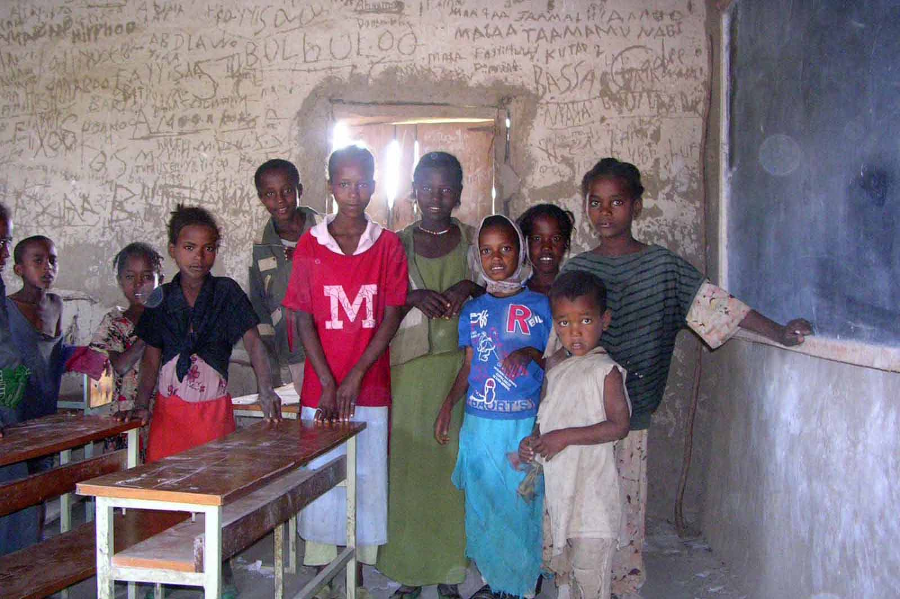
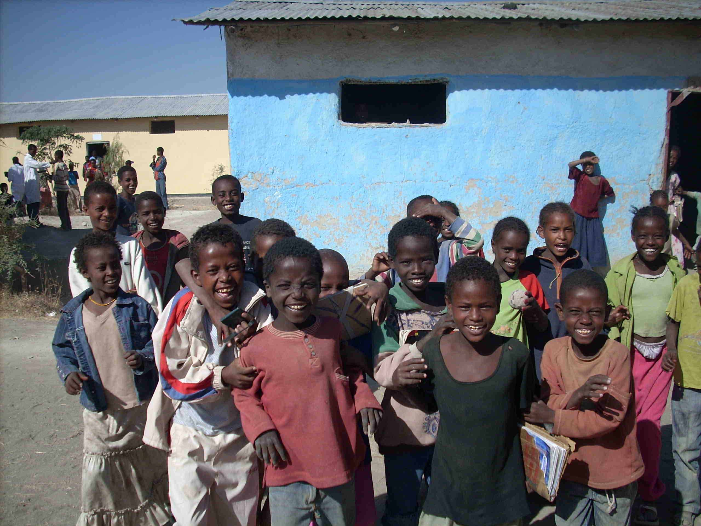
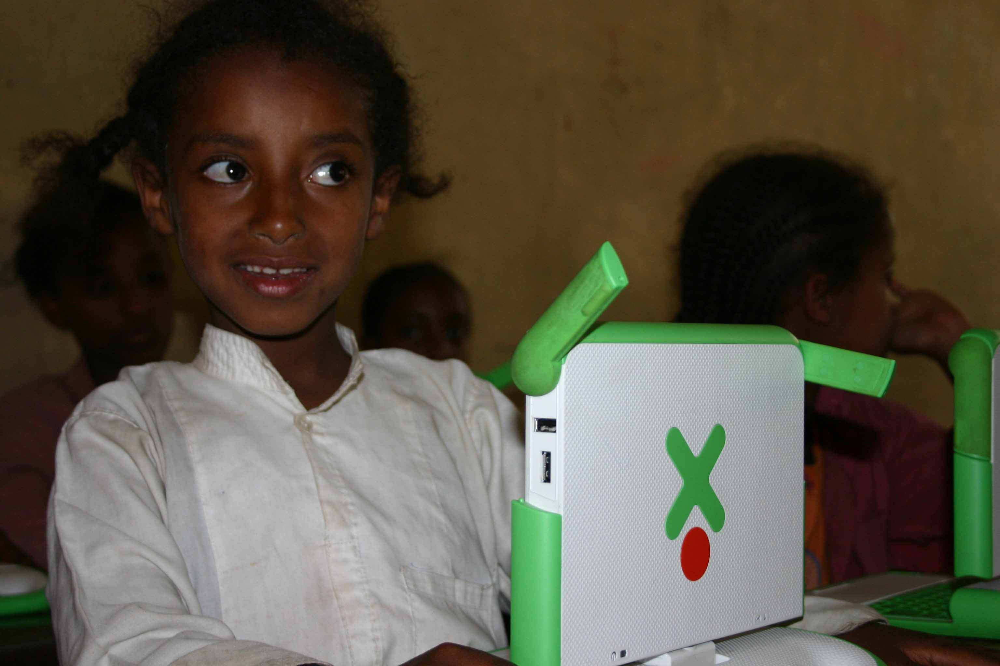

(Il Sole 24 Ore online - qui il link)
Biblioteche nella Rift Valley
Perché bisognerebbe mettere libri, riviste, musica e disegni laddove c'è un pozzo, una clinica o un mulino
Testo e foto di Fabio Artoni

Una biblioteca nelle campagne d’Etiopia è un luogo di ritrovo comunitario. Per i contadini, gli adolescenti, i bambini. Pagine e suoni e disegni in lingua locale: amore, avventura, cibo, fantasia, eroi popolari, Donald Duck e la iena, la saggezza oromo, la battaglia di Adwa, Abebe Bikila e Derartu Tullu E poi una selezione in inglese di dizionari, grammatiche, letture semplificate, metodi multimediali, audiobook, documentari della Bbc. Collane africane. Shakespeare e Chinua Abebe. Drammi dell’aids e famiglia. Volti dell’africa. Foto della capitale, delle ultime tribù dell’Omo River, dell’araba Harar, dei lunghi anuak che abitano dove scorre il Baro, ai confini con il Sudan, l’infuocato Afar… Terre mitiche, che anche le parabole e la premier league in diretta non rendono meno esotiche di Liverpool. E i classici, naturalmente, con qualche incidente di catalogazione: “Delitto e Castigo” che finisce accanto a “Il Padrino” nelle storie di “mafia e crimine” perché Raskolnikov è un ladro e assassino; Shakespeare nelle short stories umoristiche; la biografia di Bertold Brecht che cerca ancora lo spazio sugli scafffali…
Houghton Mifflin, editore americano, pubblica ottimi libri didattici. Ad Addis Abeba i suoi libri sono ovunque: nelle belle librerie alla moda, nei popolari minicontainer che vendono libri usati, nelle scuole e nelle biblioteche. Carta patinata, colorata, grafica vivace. Spesso arredano anche i muri di una casa etiopica.
Le case della gente comune di Etiopia, negli immensi altipiani di questo paese, sono capanne a volta, casette di paglia con un grande palo al centro o case di cicca: mattoni di fango e paglia compressi e messi uno sull’altro. Come tetto ancora paglia, o lamiera. Una lampadina o una lampada a gasolio, a seconda della sorte. I muri parlano: fogli di giornale, poster dell’Arsenal, del Manchester, riproduzioni di Gesù generalmente sanguinanti, Madonne azzurrine e Cristiano Ronaldo. Spesso anche pagine di libri scolastici. In inglese. Come quelli di Houghton Mifflin. Rossi e azzurri pastello che aprono finestre di colore in case troppo povere per essere dipinte. Mi capitò di vedere su una parete pagine scritte fitte fitte, con piccoli disegnini qua e là. Erano pezzi di Encyclopedia Britannica. La casa era quella di una donna di Zway, dove ho vissuto per alcuni anni, una cittadina tra acacie e polvere a sud di Addis Abeba, in piena Rift Valley, sulla strada per il Kenya. Una casa povera di una donna povera. C’ero andato per la cerimonia del caffè e mi trovai a leggere i muri.
Strano destino quello di tanti libri donati e arrivati in Etiopia a Gibuti, via container, in questo paese dove la gente ricicla, rivende, riaggiusta tutto. Le bottiglie di plastica sono qualche volta l’unico modo di portarsi a casa un po’ di acqua potabile; le lattine di salsa Merti l’unità di riferimento di una misura di granaglie o zucchero al mercato; le medicine nei blister il rimedio magico dei frengy (i bianchi) per qualsiasi malattia. La fine di molti libri, esauriti i suoi percorsi di possibili utilità, è di finire appiccicati ai muri delle case. Oppure di morire d’oblio in una biblioteca scolastica.
A Zway il libraio Eshete ha una libreria: uno stanzino di quattro metri per quattro dove arriva molto di quel che si stampa in Etiopia. Eshete è un oromo, l’etnia più diffusa in Etiopia ma che non ha mai governato il paese. Non è il centro della città una libreria. La vita è il mercato, la strada, il pozzo, i venditori ambulanti, i fabbri e i sarti per le strade… Qui però c’è un bel viavai, ed Eshete non se la passa male. Da lui si trovano testi introvabili altrove. Quando con i missionari salesiani di Zway e Mohamed, amico e insegnante di chimica nella scuola salesiana, pensammo che sarebbe stato bello fare una piccola biblioteca per la gente e gli studenti, Eshete divenne la nostra longa manus ad Addis Abeba. Nei mesi successivi lo avremmo spesso aspettato il lunedì sera a Zway, saltare giù da un autobus fumoso e sgangherato con il nostro rotolo di giornali e libri freschi comprati nella capitale. Da allora e per un bel pezzo, che si trasportassero teste di motori e radiatori, cotone e stoffe, telai e sacchi di sorgo, anche il cassone della nostra macchina non fece mai un viaggio nella capitale a vuoto.
La produzione libraria in lingua locale è di bassa qualità ma molto ricca. Nelle grandi città si trovano ovunque testi di fiction, poesia, cucina, storia, religione ed esoterismo… Vanno forte i libri d’amore, sulla scia di “Feker eske mekaber” (“Amore fino al cimitero”, letteralmente) pilastro della moderna letteratura in amarico. Ma anche detective stories, libri su come avere successo in dieci mosse, manuali per fare le treccine e per coltivare i pomodori. “Where there is no Doctor” in amarico è un best seller. “Pinocchio” (rinominato Afimcho, naso) è ormai un po’ datato anche da queste parti. Harry Potter non sembra vada per la maggiore, ma si stampa. Una Ngo ha addirittura fatto tradurre “Delitto e Castigo”. E poi libri di meccanica, di falegnameria, degli antichi mestieri. Un po’ di tutto e a poco: qualche decina di birr, la moneta locale.
Ma fuori dalle città, e sempre più via via che si entra nelle zone rurali, lo stimolo e la possibilità della lettura come piacere scompare. Il solo mercato è quello dei libri “utili”. Quelli scolastici, che servono a passare un esame. Testi di geografia con centinaia di pagine senza neppure una foto. Le alpi piatte come la tundra siberiana. Nozionismo per catturare un diploma che apre le porte dell’università.

A fine giornata, seduti all’ombra condividendo un piatto di engera (il pane locale, spugnoso e acido) sui gradini della libreria di Eshete, incontravamo i ragazzi e gli studenti. Andavano o tornavano da scuola, uniformi colorate e sandali di gomma ricavati dai copertoni ai piedi. I temariuocc, gli studenti, parlavano sempre del “plasma”. Nel loro modo ammiccante, di sopracciglia che annuiscono, maledicevano il “plasma”.
Il plasma è un’invenzione del governo che vorrebbe livellare in alto la formazione con l’apporto della tecnologia. In molte scuole governative e dove arriva l’elettricità si è installata una parabola, i router in una capanna di lamiera e uno schermo al plasma ultimo modello in classe. In una cornice di fango e pixel digitali, a orari fissi una stazione di produzione trasmette via satellite lezioni di fisica, biologia, chimica, matematica in inglese. L’insegnante è ridotto a bidello tecnologico, mentre i centoventi studenti annaspano e lottano per capire qualche frase. L’illusione che la tecnologia sia la via alla formazione si spegne in montagne di ore uomo buttate davanti a uno schermo.
La lingua inglese per molti è il lato oscuro della luna. Chi l’affronta, suda, studia e la supera, entra in un altro mondo, ampio come un mare. Chi non può, non ce la fa o semplicemente non ci pensa, rimane dall’altra parte. A salutare gli stranieri con il solito “where are you go?”. Ai margini della modernità con l’amarico, l’oromo, il sidamo e le altre sessanta lingue di questo paese mosaico.
Insieme ai ragazzi e ai nostri studenti si pensò che sarebbe stato bello fare una piccola biblioteca per la gente, gli adolescenti, i bambini. E anche riorganizzare la grande biblioteca della scuola dei salesiani. Metterci dentro pagine su pagine in amarico e oromo di amore, avventura, cibo, fantasia, eroi popolari, Menelik e Haile Selassie, Donald Duck e la iena, la saggezza oromo, la battaglia di Adwa, Abebe Bikila e Haile Gebreselassie… Pagine e caratteri amichevoli, che facessero l’occhiolino, che invitassero alla lettura.
E poi una bella selezione in inglese di dizionari, grammatiche, letture semplificate, metodi multimediali, audiobook, documentari della Bbc. Collane africane. Shakespere e Chinua Abebe. Drammi dell’aids e famiglia. Volti dell’africa. E foto della capitale, delle ultime tribù dell’Omo River, dell’araba Harar, dei lunghi e “neri” anuak che abitano dove scorre il Baro, ai confini con il Sudan, l’infuocata Dankalia… Terre mitiche, che le parabole e la premier league in diretta non rendono meno esotiche di Liverpool.
Ci sarebbe stata la musica, naturalmente: Teddy Afro, Johnny Ragga, Zerihun, Osebassa, le danze sensuali di guraghe e oromo, Mahmoud Ahmed, il jazz della collana ethiopique. Quella che suona sulle strade sparata da altoparlanti accrocchiati tra cavi volanti e batterie d’auto, nei negozi da barbiere, nei bar. E poi i film di un’Etiopia che conosce la rivoluzione digitale e salta d’un colpo le scuole di cinematografia, la tecnica e la cultura. E telecamera alla mano produce un po’ di tutto: storie di amori impossibili, di famiglie divise e ritrovate, di fuga dalla miseria, parodie dei curatori tradizionali, degli anziani. Quasi un videoblogging fuori rete, popolare e africano, che guarda alla modernità aggrappata alle radici.
E ancora quotidiani e riviste. Mi raccomandarono le “mazette”, stampa popolare e semiclandestina che scrive di calcio, corsa, medicina, fashion, spettacolo… Le cercammo laddove si trova tutto: a Merkato, Addis Abeba. Nel “più grande mercato all’aperto dell’Africa” arrivano mandrie, pastori hafar, camion con gli ammortizzatori strizzati da carichi di cotone, tessuti, elettronica cinese. Ma non libri e giornali. Le mazette si trovano a Piassa, spalmate sui marciapiedi di questo quartiere battezzato così ai tempi degli italiani d’abissinia.
Nel tempo libero che ci lasciava il nostro lavoro, con un budget all’osso pensammo a piccoli spazi organizzati come una biblioteca ma liberi come una libreria. Scaffali a vista, un tabellone per le recensioni, un posto per le critiche e i suggerimenti. Con i ragazzi del workshop della missione pensammo agli arredi: con ferro, legno, saldatrice, un cacciavite per ogni stagione e l’arte tutta africana di ricavare l’utile con l’essenziale costruimmo tavoli, sedie, scaffali, porte, finestre, mensole. I ragazzi di strada di Addis Abeba accolti nel centro dei salesiani fecero la loro parte costruendo qualche scaffale in bamboo.
A Boromo, nel gheter (letteralmente campagna, in pratica l’immenso spazio fuori dai centri abitati), arrivarono carichi di sabbia e cemento a dorso di mulo per rifare le aule, in una scuola governativa senza elettricità, tra centinaia di bambini e ragazzi che mordono la vita a piedi nudi. Le cittadine che si allargano attorno alle strade d’asfalto sono un’istantanea degli anni quaranta: torni e frese che riparano mozzi di carretti, vecchie macchine da caffè, sudore e martellate. Nel gheter la fisicità del lavoro sono i muscoli dei contadini, che conquistano metro su metro di terra con zappe, falci arrugginite e aratri di legno. Durante la stagione delle piogge la pista per Boromo è coperta dall’acqua. Tavoli e scaffali arrivarono a bordo di mulo. Un comitato d’accoglienza con il preside della scuola e centinaia di ragazzi scaricarono la roba. Mohamed notò con disappunto che l’aula per la biblioteca era già stata destinata ad altri usi. Ma con il solito cighiriellem (non c’è problema), l’aula venne riconsegnata al suo uso. Mohamed riacquistò il sorriso: “Un minuto prima odio la mia gente. Un minuto dopo amo la mia gente”.
Catalogare i libri non fu un lavoro, ma l’ennesima conferma della diversità. “Il catalogo serve solo per controllare che il bibliotecario non si rubi i libri” mi dissero. “No, serve per organizzare la ricerca, per muoversi tra i testi” replicai. Incidenti di percorso: “Delitto e Castigo” finì diretto accanto a “Il Padrino” nelle storie di “mafia e crimine” perché Raskolnikov era solo un leba (ladro) e assassino; Shakespeare nelle short stories umoristiche; la biografia di Bertold Brecht è ancora a cercare lo spazio sugli scafffali… Il catalogo rimase lì, finito e bello e intonso nelle sue schede compilate in tre lingue. Non lo utilizzammo se non per controllare l’onestà del bibliotecario. I ragazzi hanno bisogno di vedere, toccare, rimanere colpiti dalla copertina, da un titolo, da una foto. Guidare alla lettura è un lavoro educativo. E un bibliotecario è soltanto poco più di uno zebegnà: un guardiano alla carta.
Un elegante signore vissuto negli Stati Uniti per trent’anni e da qualche anno tornato in Etiopia fu la nostra stampella. Johannes Gebregeorgis lavora per una Ngo americana (www.ethiopiareads.org) che costruisce biblioteche in Etiopia. Fa professionalmente quello che noi facemmo artigianalmente. Organizza la settimana della lettura, gestisce ad Addis Abeba la Shola Library, un bello spazio pubblico per i bambini, pubblica in Etiopia storie illustrate per bambini con testo inglese/amarico. Si è inventato la Donkey Mobile Library, una biblioteca ambulante trainata da un asinello, anche se è più un’idea di marketing che efficace. Da poco è anche un “Cnn Hero” (www.cnn.com/heroes). La maggior parte dei libri che fornisce arriva via container dagli States. Diventammo amici e si stupì di vedere tanti libri in amarico e oromo che lui non aveva. “Alcuni li abbiamo trovati da un docente dell’università di Addis Abeba” dissi “altri da artisti, e altri ancora in buchi della città che solo Mohamed ed Eshete conoscono”. Johannes ci organizzò dei corsi per i nostri bibliotecari, che oggi lavorano gomito a gomito con gli insegnanti.

Questa foto è stata scattata in una scuola governativa di Addis Abeba, ai tempi del progetto pilota del "laptop da cento dollari", che avrebbe dovuto digitalizzare le scuole etiopiche. Un progetto fallimentare: i ragazzi hanno bisogno di toccare i libri, sfogliarli, ascoltare musica insieme, appendere commenti e foto e disegni alle pareti.
In questi giorni si parla di una possibile carestia in Etiopia. Le piogge di marzo/aprile sono state avare. I raccolti saranno poveri. Servono i soliti grandi interventi strutturali. E tanti piccoli interventi a pioggia. Dove si pensa a un pozzo, una piccola clinica, un silos per le sementi, vale la pena aggiungere un piccolo spazio per una biblioteca. Aperta alla gente comune, che parli la stessa lingua. La tecnologia accessibile potrebbe aiutare. Un posto dove Ashennafi si studia l’inglese e Branu la bibbia, Tewodros come allevare le galline e Mamitu una nuova ricetta, mentre Sciuaie e Tesfay sprofondano nella fantasia.